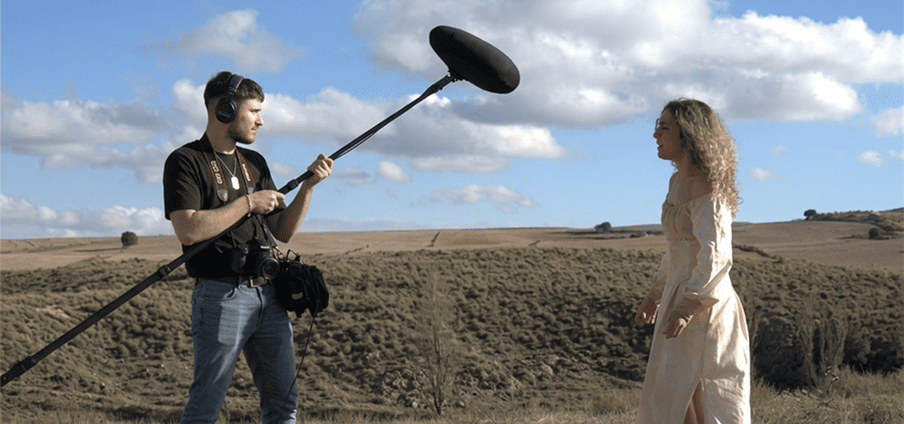
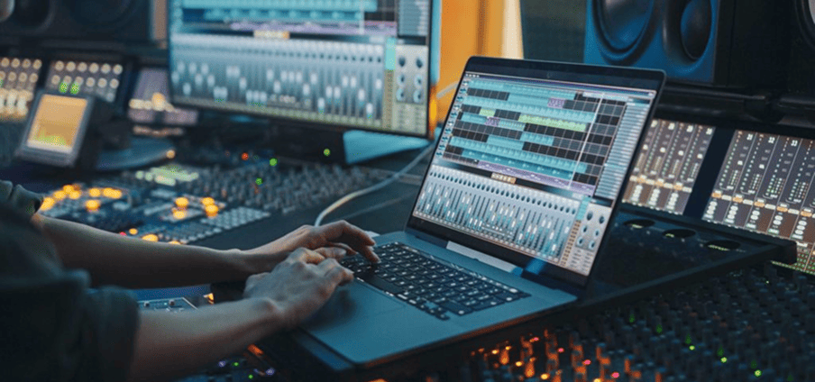
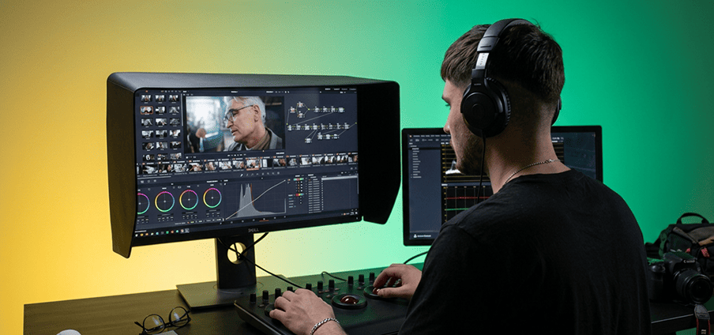
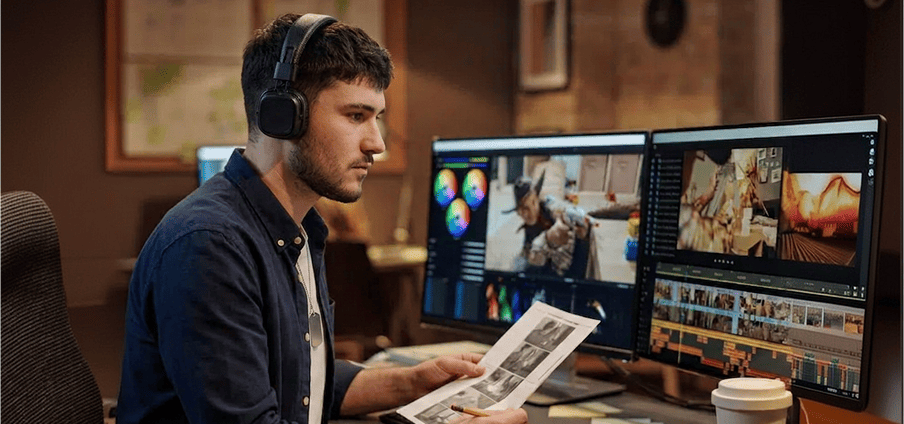
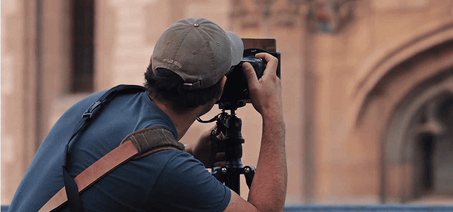
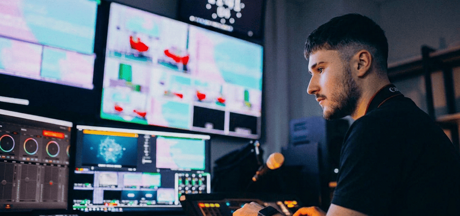
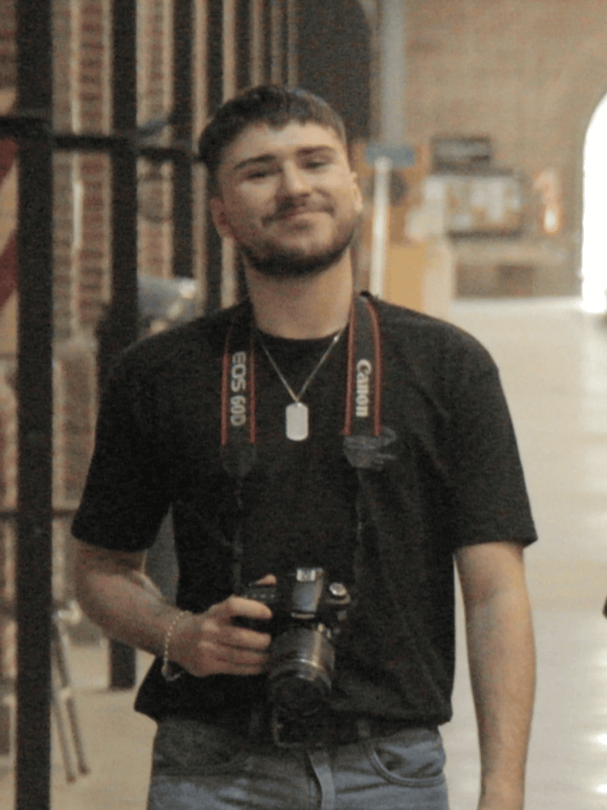

SONIDO DIRECTO
Captura en rodaje y en vivo: microfoneo, balance de niveles y resolución de imprevistos sobre la marcha.
CONSOLA EN VIVO · BOOM · LAVALIER
Hola, me llamo
Trabajo el sonido, el montaje y la imagen de proyectos audiovisuales. Del rodaje a la entrega final, con criterio narrativo y prolijidad técnica.

Captura en rodaje y en vivo: microfoneo, balance de niveles y resolución de imprevistos sobre la marcha.
CONSOLA EN VIVO · BOOM · LAVALIER

Limpieza, edición, doblaje y mezcla final. Diálogos inteligibles y una mezcla que respeta la escena.
NUENDO · REAPER · IZOTOPE RX

Armado de la estructura, ritmo y decisiones narrativas. El corte es donde la película se termina de escribir.
PREMIERE PRO · DAVINCI RESOLVE

Corrección primaria, balance entre planos y look final coherente con el tono del proyecto.
RESOLVE · REC.709 · ENTREGA 4K

Cobertura de eventos, registro de rodaje y retratos. Foto de evento entregada rápido y editada.
COBERTURA · RETRATO · REGISTRO

Armado y operación de transmisiones en vivo: switcheo, audio y monitoreo de la señal.
OPERADOR DE STREAMING · MULTICÁMARA

Me llamo Federico Agustín Biennati Villarino, vivo en Luis Guillón y estoy terminando la Licenciatura en Audiovisión en la Universidad Nacional de Lanús. Trabajo en sonido, montaje y fotografía, y cada proyecto que tomo lo acompaño de punta a punta.
Empecé en 2023 haciendo sonido para producciones académicas y montando cortos de compañeros. Trabajos chicos, con equipos prestados y plazos cortos, donde aprendí lo que ninguna cursada enseña: resolver con lo que hay y entregar igual, en fecha.
Mi lugar más cómodo sigue siendo la consola. Hice el sonido en vivo de Rock UNLa 2025, asistiendo en el balance de niveles y resolviendo imprevistos con el equipo técnico mientras el show ya estaba en el aire.
En postproducción trabajo con Nuendo, Reaper e iZotope RX para audio, y con Premiere Pro y DaVinci Resolve para imagen y color. Entiendo el montaje como una decisión narrativa antes que técnica: dónde cortar define qué siente el espectador.
Desde marzo de 2026 doy talleres de introducción al lenguaje audiovisual en la Escuelita Audiovisual de “La UNLa de los Jóvenes”. Diseño los contenidos y acompaño a los chicos en sus primeras producciones, con devoluciones de cámara, sonido y edición.
Trabajo bien con plazos claros y presupuestos hablados de entrada. Prefiero decir que algo no entra en el tiempo disponible antes que entregar una mezcla apurada. Si el proyecto te importa, escribime: la primera conversación es para entender qué necesitás.
“Montó mi corto en dos semanas y encontró una estructura que yo no veía. Entregó la mezcla con el proyecto ordenado y todo documentado.”
DIRECTOR · CORTOMETRAJE INDEPENDIENTE
“Lo llamamos para el sonido del festival y terminó coordinando medio backstage. Resolvió dos problemas de señal en pleno show sin que el público se enterara.”
PRODUCCIÓN · ROCK UNLA
“Como tallerista tiene una paciencia enorme. Los chicos entendieron plano y sonido en cuatro clases y se fueron con un ejercicio filmado por ellos.”
COORDINACIÓN · LA UNLA DE LOS JÓVENES
Contame qué necesitás y lo vemos juntos: sonido directo para un rodaje, mezcla y postproducción de audio, montaje, corrección de color, fotografía de evento o la transmisión en vivo completa.
Trabajo con producciones académicas, cortometrajes independientes, festivales, congresos y talleres. Me adapto al equipo que tengas disponible y, si hace falta, llevo el mío.
Escribime contándome de qué se trata, para cuándo lo necesitás y con qué presupuesto contás. En la primera charla definimos alcance, tiempos y entregables — sin compromiso y con una respuesta clara sobre qué entra y qué no.